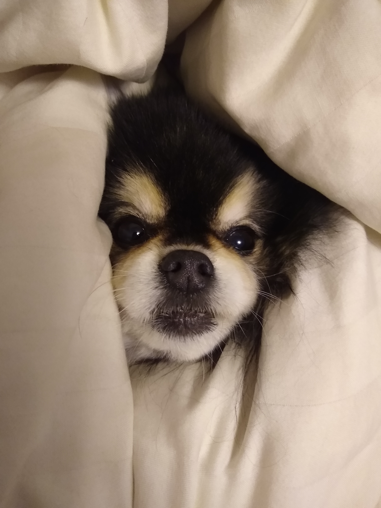

Just how much terror can one beast sow when they weigh only six pounds?
Meister is a 10 year old toy pomeranian that somehow contains the wrath and ire of an Olde God in a frame smaller than a football. What he lacks in teeth he makes up for in peculiar aromas and pure gumption. If you fall victim to the siren call of his outrageously boopable snoot you are beholden to deliver belly scritches until he inevitably gets distracted.
Hobbies include:
- Frequently terrorizing an incredibly docile cat twice his size
- Barking at anyone who comes to the door so hard that he farts
- Violently defending his food while constantly pining for the cat's